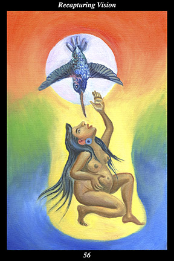

 | IMAGEDescending from the sun, a hummingbird impregnates a female warrior whose posture and gesture signify that she actively invites the creative forces to bring forth a new creation through her. |
INTERPRETATION
This hexagram depicts reawakened idealism. The hummingbird descending from the sun symbolizes the spirits of great warriors who return from the house of the sun to inspire the living. The female warrior is symbolic of one trusting life and serving spirit in order to bring
benefit to all. That she actively invites the creative forces to bring forth a new creation through her means that you possess the openness of spirit and the joy of life to conceive and nurture an endeavor that reflects the underlying perfection of the world. Taken together, these symbols mean that your every act is a sincere effort to bring the external world into accord with the original dream of spirit.
ACTION
The feminine half of the spirit warrior is fulfilled by the will to create. We enter this world with memories of those principles which should govern personal and social conduct—principles that call us to task, demanding that we seek the good and the beautiful, demanding that we honor and respect all life, demanding that we have the opportunity to fulfill our full potential, demanding that we live compassionately and joyfully. Yet our memories of these principles grow dim over time as we are exposed to the cruelty and suffering pervading the world—and dimmer still as we seek to establish a secure and stable life while surrounded by so many others competing for a similar goal. In times of darkness the sun seems very far away, yet its light and warmth are here among us every day: although senseless suffering and mad cruelty seem to govern people’s lives everywhere, the loving guidance of the unseen ancestors is present among us every moment. Because you actively invite spirit to make use of you to bring its principles to life, you recapture the vision with which you came into the world and rededicate yourself to its fulfillment. It is not a time to hold back for fear of being impractical or naive, since your sincerity, passion, and integrity make it possible to achieve real and lasting changes. Nor is it a time to hold back for fear of losing to superior forces, since your hope, compassion, and courage eventually win over opponents to your endeavor. Radiate unfading optimism and unqualified love for people everywhere and your efforts inspire others to risk sharing your vision. Demonstrate principled action and steadfast devotion to the divine spark in every life and you make yourself a worthy vehicle for the creative forces.
INTENT
Personal success is secondary to bringing
benefit to others, personal longings are secondary to the legitimate need of others. All people deserve the same rights, all cultures are created equal. We
benefit from the efforts of our ancestors, our descendants must
benefit from our efforts. We
benefit from what our environment produces, our environment must
benefit from what we produce. We share a common origin with all life, we share a common destiny with all spirit. Principles must reflect the underlying harmony of the world, ideals must be put into action.
SUMMARY
You are procrastinating. Your conscience demands things be acted on and the hour is growing late. Don’t find excuses to keep you from speaking and acting as you should. Now is the time to channel your righteous indignation into creative acts that touch others’ hearts. Rage not against injustices done to you, but against the injustices done to others. The momentum is with you.
THE LINE CHANGES
1° Strong-willed and independent, you do not let those above influence your lifestyle. This is all well and good—but you must exercise the same independence from the opinions of those you count as peers. Avoid fads and fashions—let the inner determine the outer, not the other way around.
2° Relationships are not like jewelry, meant to impress others and improve one’s social standing. The fact that others act precisely in this manner makes your own conduct all that much more important. How and why you choose the friends and partners you do is a most telling aspect of your character.
3° Lax ethics everywhere abound—it can be sorely tempting to go along with those who appear to be benefiting from impropriety. Making a past that has to be covered up, however, is not the way to improve your standard of living now. Promote yourself without lowering yourself.
4° You feel you are too good to settle for either of the choices before you, yet you are too impatient to wait for another opportunity. This is thinking too much about appearances and not enough about the inner worth of all concerned. No matter what you decide, your attitude must mature.
5° Success has not spoiled you—you set a standard for refined simplicity and effectiveness that your peers criticize and refuse to emulate. Because you are attuned to the time, however, you are soon vindicated. Make every facet of your life consistent with your principles.
6° No longer concerned with appearances at all, your lifestyle reflects your concern for comfort and functionality. You have come to adorn yourself as nature adorns itself—clouds in the sky, lakes on the land, snow on the mountains, jewels underground. Continue refining your inner gold.